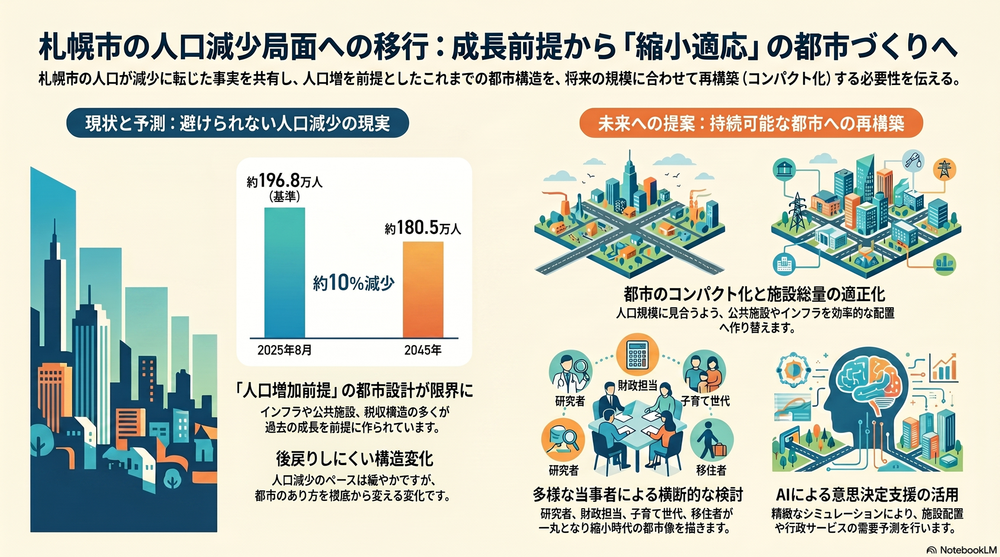

人口減少・高齢化
10年以内
人口減少局面への移行
令和7年国勢調査で、札幌の人口は調査開始以来はじめて減少に転じた。世帯は1世帯2人を初めて割り込み、単身・少人数化が進む。

背景
札幌は政令市移行後ほぼ一貫して人口を増やしてきた数少ない大都市だったが、2025年の国勢調査でついにピークアウトが数字で確定した。インフラ・公共施設・税収の多くは人口増を前提に設計されており、縮小局面に合わせた作り替えが必要になる。
主要データ
| 国勢調査人口（確定） | 2020年 1,973,395人 → 2025年 1,964,034人（−9,361人／調査開始以来はじめての減少） |
|---|---|
| 1世帯当たり人員 | 2.04人（2020年）→ 1.97人（2025年）＝初めて2人を下回る。世帯数は約99.6万へ増（＋約2.6万） |
| 参考：推計人口（2025年8月・住民基本台帳） | 約196.8万人 |
| 2045年の推計人口 | 約180.5万人（約1割減） |
事実
- 令和7年（2025年）国勢調査で、札幌市の人口は1,964,034人となり、2020年の1,973,395人から9,361人減少した。国勢調査開始以来はじめての人口減少で、札幌の人口増加局面が終わったことが数字で確定した。
- 1世帯当たり人員は2.04人（2020年）から1.97人（2025年）へ下がり、初めて2人を割り込んだ。人口が減る一方で世帯数は約2.6万増えており、単身・少人数世帯化が進んでいる（＝世帯数を前提にした需要は必ずしも減らない）。
- 将来推計では2045年に約180.5万人へ、おおむね1割の減少が見込まれている。減少局面は『見込み』から『実測』の段階に入った。
解釈
人口増を前提に整備してきた都市の規模・インフラ・税収構造を、縮小局面に合わせて作り替える必要がある。減少のペースは緩やかでも、後戻りしにくい構造変化である。
提案
- 人口規模に見合う都市のコンパクト化と公共施設の総量適正化。
- 出生・移動の両面からの対策（即効性は低く、長期の継続が前提）。
検討体制・メンバー
札幌市まちづくり政策局（未来創生）が司令塔となる。検討会には人口学・都市計画の研究者、財政部局、各分野（住宅・交通・福祉・産業）の担当、若者・子育て世代・移住者の当事者代表を横断的に集め、縮小を前提にした都市像を描く必要がある。
AIノート
AIの貢献度は中。将来人口・世帯の精緻なシミュレーションや、施設配置・行政サービスの需要予測で政策判断を支える。ただし人口減そのものを反転させる力はなく、AIは「縮小にどう備えるか」の意思決定支援が中心となる。
関連課題
関連する市の計画・制度
更新記録
- 2026-11-17令和7年（2025年）国勢調査の結果を反映。旧版は『推計人口ベースで減少局面に入った（2025年8月 約196.8万人）』としていたが、国勢調査で人口1,964,034人（2020年比−9,361人）＝調査開始以来はじめての実減が確定。1世帯当たり人員も2.04人→1.97人と初の2人割れを追記。過去の数字（2020年1,973,395人・2.04人、2025年8月推計196.8万人）は本文に残置。